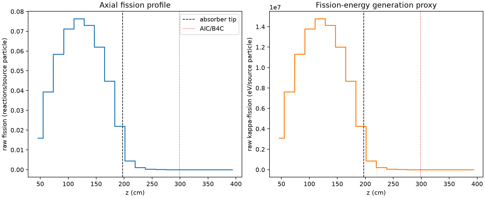
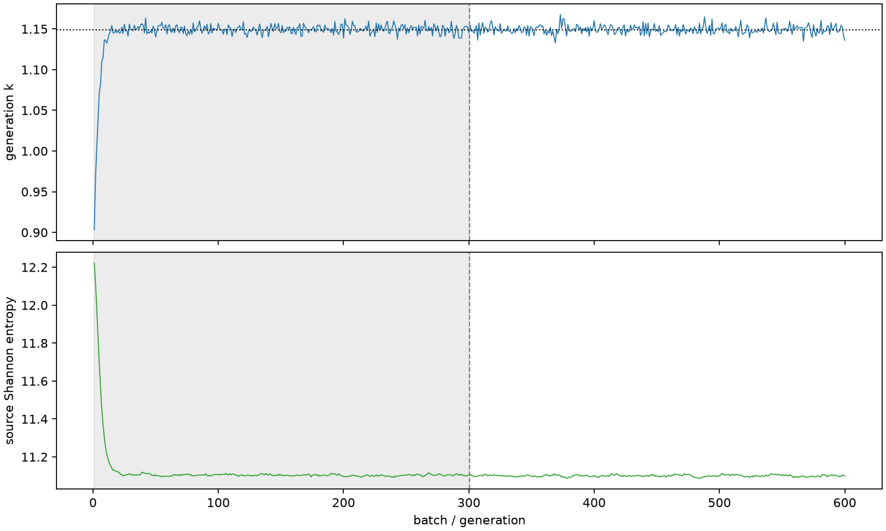

| field | value |
|---|---|
| experiment | V2-STAGE_256_OGRENCI_03-0009 |
| k | 1.1491706325401303 |
| MC standard error | 0.0001934210779535465 |
| seconds | 1129.7231209720048 |
| acceptance | not_assessed |
| convergence | review_required |
Completed is output integrity only; physical and statistical review required. Zero tallies do not prove zero production or zero uncertainty.
| diagnostic | value |
|---|---|
| geometric fuel voxels | 5280 |
| zero fission tally voxels | 808 |
| low signal fuel voxels | 1943 |
| low signal fission share | 8.59571337993092e-05 |
| low signal kappa share | 8.598695254927542e-05 |
| important fission share | 0.9500089803431552 |
| previous filter included | 3337 |
| duration estimate s | 1562.5173488400023 |
| actual minus estimate s | -432.7942278679975 |
| fission relative MC error | statistics |
|---|---|
| all_geometric_fuel | {"voxels": 5280, "positive_mean_voxels": 4472, "zero_mean_voxels": 808, "undefined_relative_error_voxels": 808, "median": 0.012770986760889325, "p95": 0.9571102904580594, "maximum": 1.0000000000000002} |
| low_signal | {"voxels": 1943, "positive_mean_voxels": 1135, "zero_mean_voxels": 808, "undefined_relative_error_voxels": 808, "median": 0.6256838896359309, "p95": 1.0, "maximum": 1.0000000000000002} |
| important_95pct | {"voxels": 2092, "positive_mean_voxels": 2092, "zero_mean_voxels": 0, "undefined_relative_error_voxels": 0, "median": 0.00670003608230929, "p95": 0.010850370116695068, "maximum": 0.01324852802941405} |
| outside_previous_filter | {"voxels": 1943, "positive_mean_voxels": 1135, "zero_mean_voxels": 808, "undefined_relative_error_voxels": 808, "median": 0.6256838896359309, "p95": 1.0, "maximum": 1.0000000000000002} |
| kappa_fission relative MC error | statistics |
|---|---|
| all_geometric_fuel | {"voxels": 5280, "positive_mean_voxels": 4472, "zero_mean_voxels": 808, "undefined_relative_error_voxels": 808, "median": 0.012756180726557695, "p95": 0.9574334565665918, "maximum": 1.0000000000000002} |
| low_signal | {"voxels": 1943, "positive_mean_voxels": 1135, "zero_mean_voxels": 808, "undefined_relative_error_voxels": 808, "median": 0.627056009263233, "p95": 1.0, "maximum": 1.0000000000000002} |
| important_95pct | {"voxels": 2092, "positive_mean_voxels": 2092, "zero_mean_voxels": 0, "undefined_relative_error_voxels": 0, "median": 0.006692349121879341, "p95": 0.01083685138837023, "maximum": 0.013231700041391585} |
| outside_previous_filter | {"voxels": 1943, "positive_mean_voxels": 1135, "zero_mean_voxels": 808, "undefined_relative_error_voxels": 808, "median": 0.627056009263233, "p95": 1.0, "maximum": 1.0000000000000002} |
| axial bin | fission share | kappa-fission share |
|---|---|---|
| 1 | 0.03402270219182149 | 0.03402402717091213 |
| 2 | 0.08403208862977589 | 0.084031445641086 |
| 3 | 0.1245667558844767 | 0.12456567950807325 |
| 4 | 0.15171098419923618 | 0.15170978029815405 |
| 5 | 0.16266178884915602 | 0.16266007381718633 |
| 6 | 0.15576110361295709 | 0.15575958971629172 |
| 7 | 0.13232653497535085 | 0.1323257445549112 |
| 8 | 0.0955616632686107 | 0.09556088307099543 |
| 9 | 0.046827222304864184 | 0.04682897942682956 |
| 10 | 0.009573679530048555 | 0.009577209571889239 |
| 11 | 0.0022619480909840278 | 0.002262794032752643 |
| 12 | 0.0005269450041775048 | 0.000527145988562196 |
| 13 | 0.00012442976239144887 | 0.00012447874230313023 |
| 14 | 3.079063398530203e-05 | 3.080059542710257e-05 |
| 15 | 8.622723525773844e-06 | 8.624373116375792e-06 |
| 16 | 1.871789250484107e-06 | 1.8736961444727811e-06 |
| 17 | 6.406911285184182e-07 | 6.415624720586549e-07 |
| 18 | 2.2785825936615753e-07 | 2.282328931498817e-07 |
| 19 | 0.0 | 0.0 |
| 20 | 0.0 | 0.0 |
Histories include the inactive-to-active transition at batch 300. kappa-fission approximates fission energy production, not total heat deposition.

